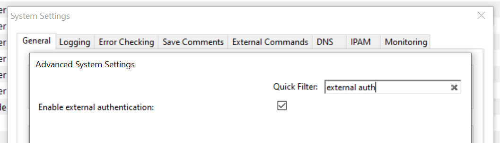
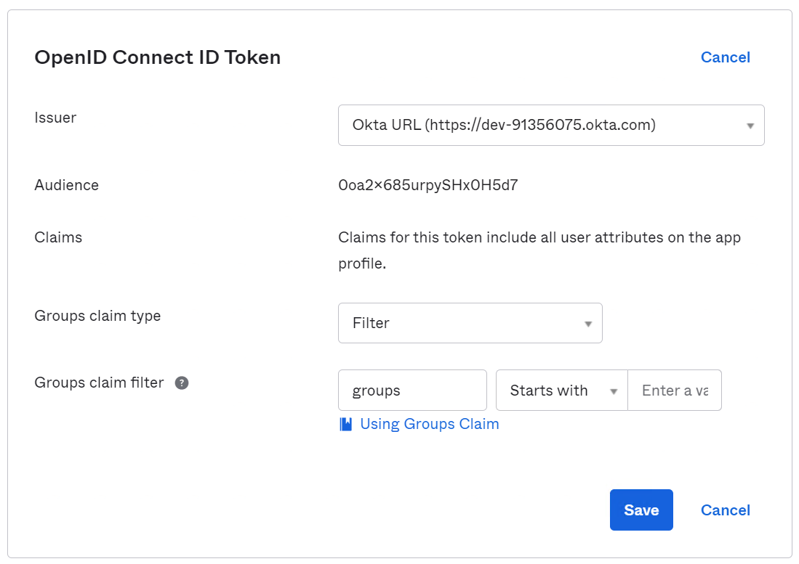

Jump to: Single Sign-On (SSO) and Multi-Factor Authentication (MFA)
External Authentication (Management Console, obsolete)
Note
Unless indicated otherwise, instructions here are to be performed in the Management Console.
Overview
This section discusses the available user authentication methods available with Micetro.
In addition to Local User Authentication, Micetro currently supports two methods of AD user authentication using the Windows Active Directory user database and authentication through a RADIUS server.
Micetro also supports multi-factor authentication (MFA) through two methods, Azure and Okta.
Active Directory User Authentication
The Active Directory (AD) User Authentication mechanism allows you to have users authenticate themselves in the AD login system before allowing them to log in to Micetro. In large installations, this system has obvious benefits as users do not have to maintain their passwords in multiple locations. The password rules (expiry, minimum password length, etc.) applied within the organization automatically apply to Micetro.
Active Directory User Authentication vs. Local User Authentication
Even when using AD User Authentication, you must create users in the Management Console and assign privileges to them using the Men&Mice access system. The only difference between AD vs. local user authentication is that when AD user authentication is used, users are authenticated using the AD User Authentication system before they can access the Management Console. When AD User Authentication is used, the user password is not stored in the Men&Mice software.
Note
Only one authentication method can be used per user, but different users can have different authentication methods. That means you can have some users log in using AD user authentication, while other users log in using local user authentication.
Enabling AD User Authentication Using Active Directory
AD user authentication using Active Directory is only possible when you run Micetro Central on a Windows machine. The machine running Micetro Central must be a member in an Active Directory domain or forest. No specific configuration is needed for Men&Mice Central for user authentication using Active Directory.
Configuring Users for AD Authentication
To configure a user to use AD user authentication, do the following:
From the menu, select .
Select the applicable user from the list. If the desired user is not shown, the user must be added to the application. For more information, see Users.
When the Properties dialog box displays, move to the Authentication field, click the drop-down list, and select the applicable authentication method. (If Men&Mice Central is not running on a Windows machine, only the Micetro authentication method displays.)
Click OK.
Note
When the AD authentication method is selected, the Password field is disabled, since the password is not stored in Micetro.
Active Directory Single Sign-on

You can enable the Single Sign-on so that Active Directory users do not have to authenticate when logging in through the Management Console.
To enable Active Directory Single Sign-on, do the following:
From the menu bar, select .
In the System Settings dialog box, click the General Settings tab.
Select the Allow Single Sign-on option.
Click OK.
Web Interface
When single sign-on is enabled, it is possible to enable sign-on in the web interface if the web application is running on a Microsoft Windows Server.
To enable single sign-on in the web application, make sure that Single Sign-on and Single Sign-on for web are enabled in Micetro.
Application Log In
Logging in to Micetro will not change when AD user authentication is used and Single Sign-on is disabled. The only thing to keep in mind is that the user name that is entered must match the user name stored in Micetro. If a distinguished user name is used, it must be entered in the same way when logging in.
Group Level Active Directory User Authentication
The Group Level Active Directory (AD) User Authentication mechanism allows you to set user access privileges by group membership in the AD. In large installations, this system has obvious benefits as the users do not have to maintain their passwords in multiple locations. The password rules (i.e., password expiry, minimum password length, etc.) that have been applied within the organization automatically apply to Micetro.
The login sequence is as follows for users with Group Level AD authentication:
The user enters his/her username and password in Micetro
Micetro uses the AD authentication mechanism to validate the user name and password. If the user name and password is correct, Micetro retrieves the group membership of the user from the AD.
The AD group list of the user is compared (by group name) to the local group list in Micetro. If a match is found, the user is logged in with the privileges specified in the local group list. If no match is found, the login fails.
To allow a user to log in to Micetro, you must create a group in the AD that has the same name as a group in Micetro and place the AD user in that group. You may create multiple groups in the AD that match group names in Micetro.
Configuring Groups for AD Group Level Authentication
When using AD Group level authentication, you must specify which groups in Micetro should be used to verify group membership.
From the menu, select . The Users and groups management dialog box displays.
Click the Groups tab.
Select the group to which you want to configure AD, and then click Edit. If the desired group is not shown, you will need to add the group. See Groups.

- Group Name
Ensure that the group name is prefixed with the name of the owning domain name. Example: The Active Directory domain “MYDOMAIN” contains the group “MM-ReadOnly”. The group name must then be “MYDOMAIN\MM-ReadOnly”.
Click the checkbox for Active Directory Integrated.
Click OK.
Note
Group Level Active Directory user authentication is only possible when you run Men&Mice Central on a Windows machine. The machine running Men&Mice Central must be a member of an Active Directory domain or forest.
Configuring Users and Access Privileges
You do not have to create users in Micetro when the Group Level AD authentication is used. Instead, user access is controlled by the group membership of the user in the AD.
RADIUS User Authentication
Micetro can authenticate using an external RADIUS server. In large installations, this system has obvious benefits as the users do not have to maintain their passwords in multiple locations. The password rules (expiry, minimum password length, etc.) applied within the organization automatically apply to Micetro.
RADIUS User Authentication vs. Local User Authentication
Even when using RADIUS User Authentication, you must create users in the Management Console and assign privileges to them using the Men&Mice access system. The only difference between RADIUS vs. local user authentication is that when RADIUS user authentication is used, users are authenticated using the RADIUS User Authentication system before they can access the Management Console. When RADIUS User Authentication is used, the user password is not stored in the Men&Mice software.
Note
Only one authentication method can be used per user, but different users can have different authentication methods. That means you can have some users log in using RADIUS user authentication, while other users log in using local user authentication.
Enabling RADIUS User Authentication
To enable RADIUS authentication, you must add several properties to the Men&Mice Central configuration file preferences.cfg. This file is located in the data folder inside the Men&Mice Central data directory:
Windows: C:\Program Files\Men&Mice\Central\data
Mac OS X:
/var/mmsuite/mmcentralAll others: set during installation. Usually
/var/mmsuite/mmcentralor/chroot/var/mmsuite/mmcentral, where/chrootis the location used as a chroot jail for named.
The properties to be added are:
RADIUSServer |
Defines the address of the RADIUS server that will do RADIUS authentication. |
RADIUSPort |
Defines the port that the RADIUS server is listening on. The default value is 1812, which is the port normally used by RADIUS. |
RADIUSSharedSecret |
The shared secret between the RADIUS server and Micetro. |
RADIUSAuthentication |
The type of authentication used. 0 = PAP, 1 = CHAP. |
Example:
<RADIUSServer value="192.168.1.3"/><RADIUSPort value="1515"/><RADIUSSharedSecret value="MyBigSecret"/><RADIUSAuthentication value="1"/>
After editing the file, restart Men&Mice Central.
Windows: use to restart Men&Mice Central.
Mac OS X: Execute the following shell command in a Terminal window (/Applications/Utilities/Terminal):
sudo /Library/StartupItems/mmSuite/mmcentral restart
All others: Execute the
mmcentralinit script with the ‘restart’ argument.
Configuring Users
To allow a user to log in to the Men&Mice system, the user must exist in the Men&Mice user database. If the user does not exist in the Men&Mice user database, they are not allowed to log in, even if they provide a valid username and password in the RADIUS login system.
To configure a user to use AD user authentication, do the following:
From the menu bar, select . The User and group management dialog box displays.
To add a new user, click the Add button. Refer to Users. Follow the instructions with one exception: select RADIUS on the Authentication drop-down list.
To modify an existing user, double-click on the user’s name to display the user Properties dialog box, and select RADIUS on the Authentication drop-down list.
Note
When the RADIUS authentication method is selected, the Password field is disabled, since the password is not stored in Micetro.

Logging into Micetro Using RADIUS
Logging in to Micetro will not change when RADIUS user authentication is used. The only thing to keep in mind is that the user name that is entered must match the user name stored in Micetro.
Single Sign-On (SSO) and Multi-Factor Authentication (MFA)
Micetro has integrated with both Azure Active Directory and Okta to allow integration with multi-factor authentication and SSO.
Once configured the front page of Micetro will present buttons to redirect the user to the provider’s URL for authentication.
Integrating with Identity Provider’s SSO/MFA
Micetro is adding support for multifactor authentication via two identity solutions, Azure Active Directory and Okta.
{kind=link}
Dependency Checklist
Configure and enable SSO and MFA in your identity provider
Micetro web servers must be configured for HTTPS and have a valid certificate
Central must have internet access to identity provider’s endpoints
- Azure
login.microsoftonline.com
graph.microsoft.com
- Okta
*.okta.com
Python with dependent libraries and requests package is installed on the Central server
Azure
msal >=1.17 – The Microsoft Authentication Library that enables Micetro to access the Cloud for AAD - https://pypi.org/project/msal/1.17.0/
requests - https://pypi.org/project/requests/
Okta
Python 3 required.
okta_jwt_verifier >=0.2.3 – Verifies Okta access and ID tokens - okta-jwt-verifier · PyPI
requests - https://pypi.org/project/requests/
Note
If running Central in HA mode, it is advised to disable the service on one of the partners to ensure installation is successful on each server, and to prevent the servers from failing over during the installation.
Installation and configuration must be done on ALL Central servers in your environment.
Installation/Setup
Setting up the Application (Identity Provider) To get the needed properties for the configuration an application first needs to be set up at the provider.
Azure Active Directory If running Central in HA mode, it is advised to disable the service on one of the During this configuration, you will need to capture your Identity Provider’s credentials.
Permissions To be able to fetch the user’s profile info and group membership, the application needs to be given permission to do that:
API/Permission Name |
Type |
Description |
Admin consent request |
Status |
|---|---|---|---|---|
GroupMember.Read.All |
Delegated |
Read group memberships |
Yes |
Granted for [name] |
User.Read |
Delegated |
Sign in and read user profile |
No |
Granted for [name] |
The app asks for User.Read from the user, but an administrator needs to grant GroupMember.Read.All. Group membership will not be synced if GroupMember.Read.All (or some wider groups permission) is not granted to the application by an administrator.
Register the Application
The setup requires navigation to the Azure Portal, and opening AAD.
On the left pane, select “App registration” and inside the newly opened “blade” (what Azure calls their subpages) click “New Registration”
Type the name, select the proper radio button value for supported authentication types and for the Redirect URI the platform should be web and the field should be https://micetro.central.fqdn/mmws/auth_cb/microsoft
Once the app has been registered, the client ID should be viewable in the essentials panel for the app.
Navigate to Certificates and Secrets to generate a new secret for the App to use.
Note
You will need this information for the Central configuration file.
Okta
To get the needed properties for other configurations an application first needs to be set up at the provider.
Sign-in method |
OIDC - OpenID Connect |
Application type |
Web Application |
Grant type |
Authorization Code (default) |
Sign-in redirect URIs |
[Micetro URL]/mmws/auth_cb/okta |
Sign-out redirect URIs (optional) |
[Micetro URL] |
The setup requires opening the Okta Administrator page.
On the left pane, expand “Application” and click “Applications”.
On the Applications page, click “Create App Integration”.
Select OIDC as Sign-in method.
Select Web Application as Application type.
Grant type: Authorization Code (default)
Sign-in redirect URIs: https://micetro-central-fqdn/mmws/auth_cb/okta
Sign-out redirect URIs: https://micetro-central-fqdn/
Okta Authorization Server
An Okta config with server_id set to default means that the Default Custom Authorization Server provided by Okta is used. Otherwise, the value should be the name of the Custom Authorization server that has been set up at Okta or be skipped (or empty) if the Org Authorization Server should be used.
Group authorization
Both new identity solutions can be used in conjunction with group authorization models in Micetro
Group membership is mirrored by matching group names, i.e., the user is added to groups (both AD and Internal, but not Built-in) in Micetro whose names match group names listed by the provider and removed from groups that do not match. If the provider does not list groups, the user’s group membership is not altered.
Note
There are options to filter and transform the provided groups in the setup of the applications at the provider’s end.
Mapping groups from Microsoft Azure AD
As Azure only returns group ID with the token the script makes an extra call to Microsoft Graph API to fetch the group names. The Graph URI used can be changed in the config (groups_uri), but it should generally not be needed. As there is a limit of about 200 group IDs that can be returned within the JSON Web Token filtering should be used to supply only the necessary groups.
Configure group claims for applications by using Azure Active Directory
Mapping groups from Okta
To map group memberships from Okta an ID Token Claim has been created with the name “groups”. Add an OpenID Connect ID Token to the application of the type “Filter“ with the name “groups“.
{kind=link}
Configure Central Server
Install Python and dependent libraries and packages on the Central server.
For information about how to install Python on Windows, see Installing Python for Men&Mice Central on Windows.
- When installing Python please ensure the following:
Python is added to
PATHand available to the user running CentralThat you are using a ratified (tested by Men&Mice) version of Python (see dependency checklist)
Python is installed in the “Default” environment
Create a new directory called “extensions” in the Central data directory.
Windows - C:\ProgramData\Men and Mice\Central\extensions
Linux - /var/mmsuite/mmcentral/extensions
Download and unzip the Micetro authentication script and signature file from Github into the newly created extensions directory.
mm_auth_cb.py.zip - This Python script handles the authentication callback from the external provider. The same script serves both providers.
For security reasons, the script is signed and will not be run if there is not a matching signature file mm_auth_cb.signature found in the same folder.
Manually create a json configuration file in the Micetro data directory. At startup, the Micetro Central program will search the data directory for a file named “ext_auth_conf.json”. It will read the contents of the file and store it in the database along with the timestamp.
The structure of the JSON object inside the configuration file is unique for each customer depending on the identity solution that is being configured.
Micetro data directory:
Windows: C:\ProgramData\Menandmice\Central\ext_auth_conf.json
Linux: /var/mmsuite/mmcentral/ext_auth_conf.json
Add the contents below with credentials obtained from your Identity Provider.
Sample config:
Azure:
{
"microsoft": {
"tenant_id": "Company_tenant_id (must match Azure)",
"client_id": "xxxxxxx-xxxx-xxxx-xxxxx-xxxxxxxxxxx",
"client_credential": "xxxxxxxxxxxxxxxxxxxxxxxxxxxxxxxxx",
"redirect_uri": "http://localhost/mmws/auth_cb/microsoft (must match what is configured in Azure)"
}
}
Okta:
{
"okta": {
"domain": "Company_domain.okta.com",
"server_id": "xxxxxxxxxxx|'default'", (can be skipped/empty)
"client_id": "xxxxxxxxxxx",
"client_secret": "xxxxxxxxxxxxxxxxxxxxxxxxxxxxxxxxxx",
"redirect_uri": "http://localhost/mmws/auth_cb/okta (must match what is configured in Okta)"
}
}
This will cache the credentials in the DB (no need to restart Central). Once Authentication through the Service Providers is established, the json configuration file can be deleted.
About the credential caching
The contents of the configuration file ext_auth_conf.json are cached in the database, therefore the file can be deleted after external authentication is up and running. The cached version is updated automatically based on the file timestamp.
Clear the cached configuration
If for some reason you want to clear the cached configuration file in the database.
Empty the .json configuration file.
Go to Console Advanced System Settings and ensure that you have the “Default web form” enabled (Tools->System Settings->Advanced).
Test with your browser to ensure you can log in locally.
Disable the external authentication in System Settings.
Enable external authentication in the Micetro system settings In the Management Console, go to and search for “external auth”.
{kind=link}
It is also possible to enable it via an API call to SetSystemSettings with a system setting named enableExternalAuthentication and a value of 1.
This will enable the SSO login on the web.
Turn off the default login form (optional)
If you only want to offer users SSO/MFA login, you can disable the default web app login form.
This will remove local/onprem login in the Web. However, you still have the option to bypass this at login.

{kind=link}
The form will not be hidden if there is no external provider configured. The login form can be found by clicking the “Log in with Micetro“ down in the left corner of the login page.
Login and Grant User/Group Access
At first login, when using either Azure Active Directory (AAD) or Okta, a new user account is created in Micetro. This user account will appear with the type “External”. External changes to the user’s email, full name, and group membership are synced at subsequent logins by matching the external ID.
A single user profile is thus not shared between an external user authenticated by Azure AD (or Okta) and AD-integrated SSO, instead they are treated as separate users in Micetro.
By default, all external users are added automatically to the “All users (built-in)” group. If group memberships are among the properties being returned by the identity service, then Micetro will add the user to groups with a matching name inside Micetro.
A few properties are synchronized by Micetro; such as user’s email, full name, and group memberships. Any external changes to these properties are updated in Micetro on the next login.
{kind=link}
Addendum
Troubleshooting
Logging for External Authentication can be enabled by putting your Central log in ll6.
External changes to user profiles
External changes to the user’s email, full name, and group membership are automatically replicated in Micetro on the next login.
Separate hosts for Micetro Central and Micetro Web Application
The Web Application/Web service is traditionally on the same host as the Micetro Central and by default, the tool will send queries to “localhost”.
if Micetro Central is on a different host from the Web Service then you can add the following XML-tag to the preference value to auto-populate the “Server” field at login:
<DefaultCentralServer value="IP or DNS name of the Men & Mice Central server" />
* Windows - C:\ProgramData\Men and Mice\Central\preferences.cfg
* Linux - /var/mmsuite/mmcentral/preferences.cfg